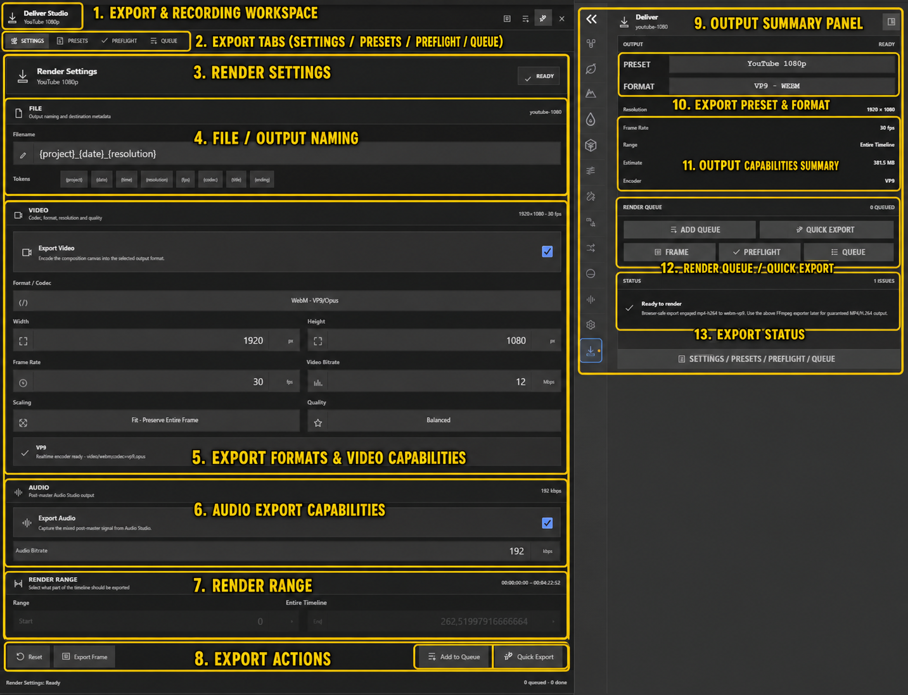
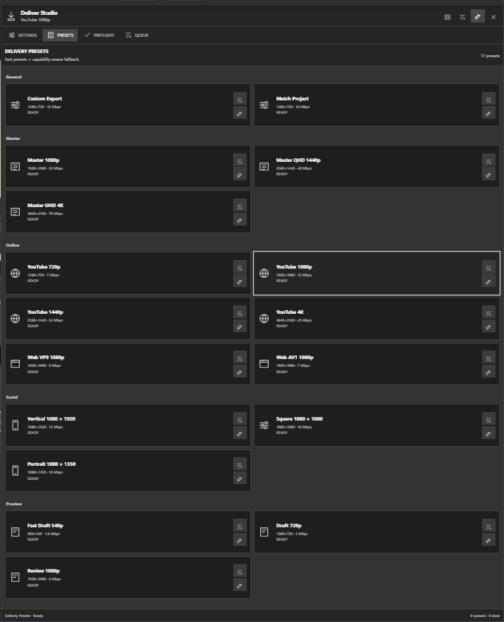
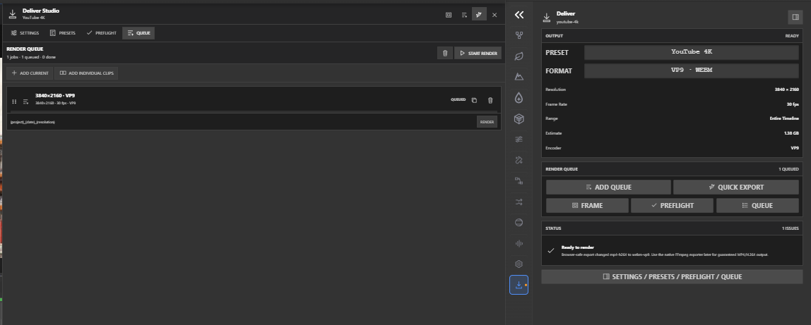

Video Export & Delivery
The SM Engine provides a robust, multi-threaded export pipeline via the
video-editing/export/ subsystem. Designed for professional workflows, the Video Export
& Delivery module supports hardware-accelerated encoding, batch processing through a comprehensive
Render Queue, and advanced preflight checks to ensure reliable outputs for platforms ranging from
mobile devices to 4K broadcast.
Export Formats & Capabilities

Managed by VideoExportCapabilities.js and VideoExportManager.js, the engine
supports a wide array of container formats, video codecs, and audio formats to suit any delivery
requirement.
| Category | Supported Types | Details |
|---|---|---|
| Video Formats (Containers) | MP4, WebM, MOV, MKV | MP4 (H.264/H.265), WebM (VP8/VP9/AV1), MOV (ProRes support), MKV for multi-track |
| Image Sequences | PNG, JPEG, TIFF, EXR | Supports alpha channel extraction, uncompressed or compressed frames |
| Audio Formats | AAC, MP3, WAV, FLAC | Customizable sample rates (44.1kHz, 48kHz, 96kHz) and bit depths (16-bit, 24-bit, 32-bit float) |
| Video Codecs | H.264, H.265 (HEVC), VP9, AV1, ProRes | H.264 profiles: Baseline, Main, High. H.265 profiles: Main, Main10. |
| Resolutions | 720p to 4K UHD, Custom | SD, 720p, 1080p, 1440p (2K), 2160p (4K UHD), and arbitrarily defined custom bounds |
| Frame Rates | 24 to 120 fps | Standard rates: 24, 25, 29.97 (Drop-frame), 30, 48, 59.94, 60, 120 fps |
| Bitrate Modes | CBR, VBR, CRF | Constant Bitrate (CBR), Variable Bitrate (VBR 1-pass/2-pass), Constant Rate Factor (CRF) for quality-based encoding |
| Color Space & HDR | sRGB, Rec.709, Rec.2020, P3 D65 | HDR Support includes PQ (HDR10) and HLG transfer functions |
Delivery Presets

The VideoDeliverPresetLibrary.js contains heavily optimized presets tailored for
specific social and broadcast destinations. Presets ensure optimal balance between visual fidelity
and file size constraint.
| Preset Name | Target Spec | Description |
|---|---|---|
| YouTube 1080p | H.264 High, 8Mbps VBR, AAC 192kbps | Standard delivery for HD video platforms with optimal bitrate for streaming. |
| YouTube 4K | H.264 High, 35-45Mbps VBR | High-fidelity 4K output maximizing retention of detail post-YouTube compression. |
| Vimeo HD | H.264 Main, 5Mbps CBR | Adheres to Vimeo's recommended guidelines for 1080p content. |
| Twitter/Social | MP4 H.264, max 2.2GB, 30fps | Strictly constrained to meet social media file size and framerate limits. |
| ProRes 422 | MOV ProRes 422 HQ | Visually lossless intermediate codec designed for round-tripping to other NLEs or post-production. |
| Web Optimized | MP4 (fast-start enabled) | Places the MOOV atom at the beginning of the file, allowing playback to start before the full file downloads. |
| Archive/Master | TIFF sequence + WAV | Uncompressed master archival format guaranteeing absolute zero quality loss. |
| Mobile (360p) | H.264 Baseline, 1Mbps, AAC 96kbps | Ultra-low bandwidth profile for messaging apps and constrained cellular networks. |
Render Queue Management

The RenderQueueManager.js and the corresponding Queue Panel facilitate
batch rendering and job management. It operates asynchronously, allowing editors to continue working
in the SM Engine while exports process in the background.
- Batch Processing: Add multiple sequences, variations, or entire projects to the queue for sequential processing.
- Priority Ordering: Drag and drop jobs within the queue to dynamically adjust rendering priority.
- Job Control: Pause, Resume, or Cancel individual rendering items at any time without terminating the entire queue.
- Live Status Tracking: Real-time feedback displaying states: Pending, Rendering, Completed, or Failed, alongside an accurate Estimated Time Remaining (ETA) projection.
- Background Rendering: Fully isolated renderer thread ensures the primary editor UI remains responsive.
Post-Export Actions
The Queue Panel (VideoDeliverQueuePanel.js) allows defining actions to trigger upon
queue completion:
- Open Folder: Automatically reveal the rendered files in the OS file explorer.
- Send Notification: Dispatch an email or webhook notification detailing job success/failure statistics.
- Shutdown PC: Safely power down the workstation after a long overnight render.
Preflight Check
Before committing to a lengthy render, the VideoDeliverPreflightPanel.js runs an
exhaustive heuristic scan of the timeline to identify potential issues that could ruin the final
export.
| Check Type | Description | Severity |
|---|---|---|
| Missing Media | Flags offline clips or missing assets (denoted by red X icons). | Critical Error |
| Storage Space | Calculates estimated final file size and verifies destination drive capacity. | Critical Error |
| Output Path Writable | Verifies OS-level write permissions for the target directory. | Critical Error |
| Audio Sync | Detects anomalous gaps or misalignments in linked audio/video tracks. | Warning |
| Resolution Mismatches | Warns if source media requires significant upscaling to meet export resolution. | Warning |
| Codec Compatibility | Checks if selected export codec supports the timeline's color space or alpha requirements. | Warning |
Export Settings Panel
The VideoDeliverSettingsPanel.js grants granular control over every aspect of the output
file. It is divided into Source Range, Destination, and Advanced properties.
Source Range
- Entire Timeline: Renders from the first frame of the first clip to the last frame of the last clip.
- In/Out Points: Renders strictly the region defined by timeline In (I) and Out (O) markers.
- Work Area: Renders the active playback loop region.
Dynamic File Naming Templates
Instead of manually naming every file, you can utilize naming tokens that dynamically resolve based on project context:
// Example Naming Template Input:
// {project}_v{sequence}_{date}_{resolution}
// Resolves to:
// MyDocumentary_v02_20231025_1920x1080.mp4
Available Tokens:
{project}- Name of the SM Engine project file.{sequence}- Name of the active timeline sequence.{date}- Current date (YYYYMMDD).{time}- Current time (HHMMSS).{resolution}- Output dimensions (e.g., 3840x2160).{frame}- Current frame number (primarily used for Image Sequence exports).
Advanced Options
- Proxy Export: Toggle this to render a low-resolution, highly compressed version designed purely for offline editing on less powerful machines.
- Chapter Markers: Automatically bakes timeline markers into the MP4/MKV metadata, creating interactive chapter points for platforms like YouTube or supported media players.
With SM Engine's comprehensive Delivery workspace, managing everything from quick social media drafts to final broadcast mastering is efficient and reliable.